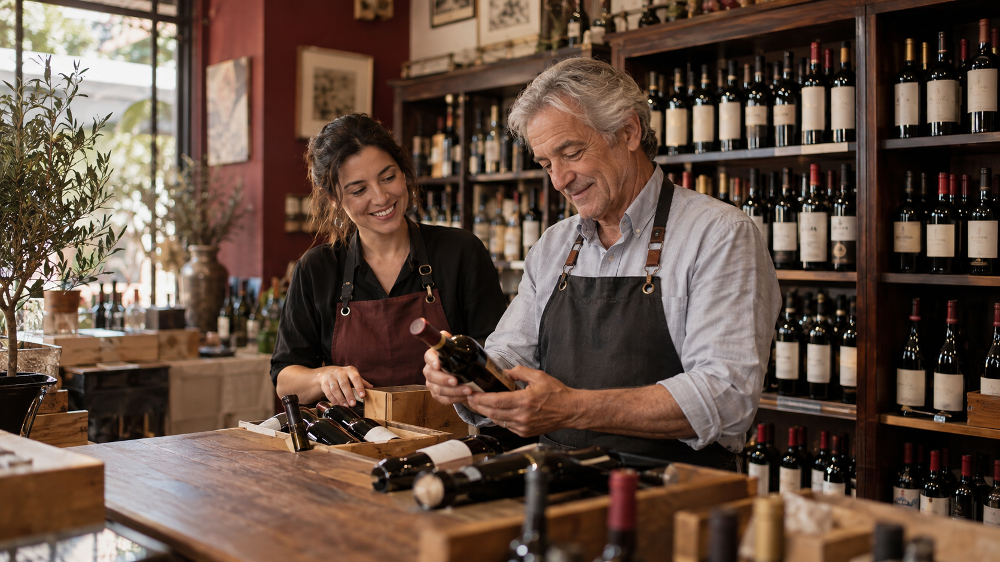

Nossa história
A Vinharia Agnello iniciou suas atividades em São Paulo há mais de 15 anos. Desde então, a empresa familiar se dedica à comercialização de vinhos nacionais e internacionais.

Uma empresa familiar
A vinharia é dirigida por Giulio, seu proprietário, e por sua filha Bianca. A loja também conta com funcionários responsáveis pela administração, pelo estoque e pelo atendimento aos clientes.
Giulio sempre valorizou o contato próximo com os consumidores. Por isso, durante muito tempo, teve receio de levar o negócio para o ambiente virtual e perder a qualidade do atendimento oferecido na loja física.
Conhecimento que faz a diferença
Os proprietários e os vendedores conhecem profundamente o mundo dos vinhos. Durante o atendimento, eles explicam as características das uvas, regiões produtoras, vinícolas, rótulos e formas de consumo.
Esse atendimento funciona como uma consultoria, ajudando cada cliente a escolher um vinho de acordo com seu paladar, a refeição planejada e a ocasião de consumo.
Valores da Vinharia Agnello
- Atendimento próximo e personalizado;
- Respeito às preferências de cada cliente;
- Conhecimento e orientação durante a compra;
- Qualidade na seleção dos produtos;
- Cuidado com o armazenamento dos vinhos.
A chegada ao ambiente digital
Durante a pandemia, as restrições de mobilidade reduziram o movimento da loja física. Muitos consumidores passaram a comprar pela internet, causando um impacto significativo nos negócios da família Agnello.
Diante dessa situação, Giulio decidiu seguir os conselhos de Bianca e iniciar a transformação digital da empresa. O objetivo é disponibilizar os produtos pela internet sem abandonar o atendimento especializado que tornou a vinharia conhecida.
Nosso objetivo
Este site representa o início dessa transformação. Além de apresentar os produtos, ele procura orientar clientes que ainda estão começando no mundo dos vinhos.
Conheça nossos produtos